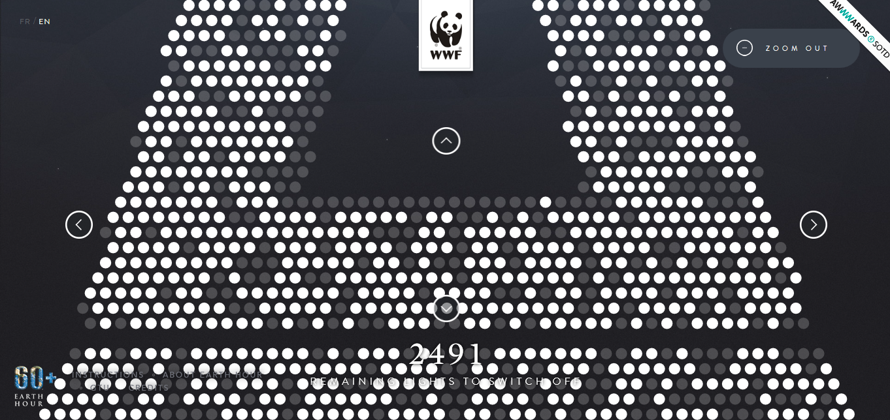
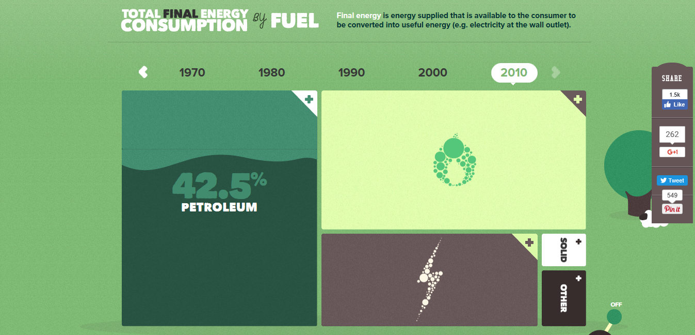

Earth Hour allows the user to participate in an energy saving project by choosing a light on the Eiffel Tower to turn off. On the screen, the Eiffel Tower lights appear as dots. You interact by choosing an exact light based on coordinates.
This site is styled as a highly interactive infographic about energy consumption. When you scroll over an element on the page, it contains more information. In addition, scrolling over various decades, themes etc. uncovers more data.
